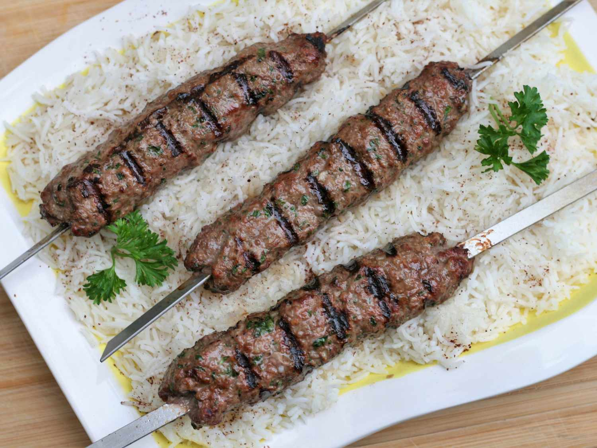

Kafta Recipe

The yummiest preparation mixture for ground beef EVER! I have made this Lebanese Meat for all of my friends and family and have HAD to leave the recipe with everyone!
- 1 ½ pounds lean ground beef
- 1 medium onion, grated
- ½ cup finely chopped fresh parsley
- ¼ teaspoon cayenne pepper
- ¼ teaspoon ground allspice
- 1 teaspoon salt, or to taste
- ¼ teaspoon black pepper
- 6 wooden or metal skewers
Steps
- Preheat an outdoor grill for high heat. If using wooden skewers, soak in water.
- In a large bowl, mix together the ground beef, onion, parsley, cayenne, allspice, salt and pepper until evenly blended. Divide into 6 portions, and press around one end of the skewers to form a log shape approximately 1 inch thick and 6 inches long.
- Grill for 10 to 15 minutes, turning occasionally, until meat is no longer pink.